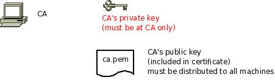

Setting up the CA¶
The first step is to set up a certificate authority (CA). It must be maintained by a trustworthy person (or group) and approves the indentities of all machines. It does so by issuing their certificates. In a small setup, the administrator can provide the CA function. What is important is the the CA’s private key is well-protocted and machine certificates are only issued if it is know they are valid (in a single-admin case that means the admin should not issue certificates to anyone else except himself).
The CA creates a so-called self-signed certificate. That is, it approves its own authenticy. This sounds useless, but the key point to understand is that every machine will be provided a copy of the CA’s certificate. Accepting this certificate is a matter of trust. So by configuring the CA certificate, the administrator tells rsyslog which certificates to trust. This is the root of all trust under this model. That is why the CA’s private key is so important - everyone getting hold of it is trusted by our rsyslog instances.

To create a self-signed certificate, use the following commands with GnuTLS (which is currently the only supported TLS library, what may change in the future). Please note that GnuTLS’ tools are not installed by default on many platforms. Also, the tools do not necessarily come with the GnuTLS core package. If you do not have certtool on your system, check if there is package for the GnuTLS tools available (under Fedora, for example, this is named gnutls-utils-<version> and it is NOT installed by default).
generate the private key:
certtool --generate-privkey --outfile ca-key.pem
This takes a short while. Be sure to do some work on your workstation, it waits for radom input. Switching between windows is sufficient ;)
now create the (self-signed) CA certificate itself:
certtool --generate-self-signed --load-privkey ca-key.pem --outfile ca.pem
This generates the CA certificate. This command queries you for a number of things. Use appropriate responses. When it comes to certificate validity, keep in mind that you need to recreate all certificates when this one expires. So it may be a good idea to use a long period, eg. 3650 days (roughly 10 years). You need to specify that the certificates belongs to an authority. The certificate is used to sign other certificates.
Sample Screen Session¶
Text in red is user input. Please note that for some questions, there is no user input given. This means the default was accepted by simply pressing the enter key.
[root@rgf9dev sample]# certtool --generate-privkey --outfile ca-key.pem --bits 2048
Generating a 2048 bit RSA private key...
[root@rgf9dev sample]# certtool --generate-self-signed --load-privkey ca-key.pem --outfile ca.pem
Generating a self signed certificate...
Please enter the details of the certificate's distinguished name. Just press enter to ignore a field.
Country name (2 chars): US
Organization name: SomeOrg
Organizational unit name: SomeOU
Locality name: Somewhere
State or province name: CA
Common name: someName (not necessarily DNS!)
UID:
This field should not be used in new certificates.
E-mail:
Enter the certificate's serial number (decimal):
Activation/Expiration time.
The certificate will expire in (days): 3650
Extensions.
Does the certificate belong to an authority? (Y/N): y
Path length constraint (decimal, -1 for no constraint):
Is this a TLS web client certificate? (Y/N):
Is this also a TLS web server certificate? (Y/N):
Enter the e-mail of the subject of the certificate: someone@example.net
Will the certificate be used to sign other certificates? (Y/N): y
Will the certificate be used to sign CRLs? (Y/N):
Will the certificate be used to sign code? (Y/N):
Will the certificate be used to sign OCSP requests? (Y/N):
Will the certificate be used for time stamping? (Y/N):
Enter the URI of the CRL distribution point:
X.509 Certificate Information:
Version: 3
Serial Number (hex): 485a365e
Validity:
Not Before: Thu Jun 19 10:35:12 UTC 2008
Not After: Sun Jun 17 10:35:25 UTC 2018
Subject: C=US,O=SomeOrg,OU=SomeOU,L=Somewhere,ST=CA,CN=someName (not necessarily DNS!)
Subject Public Key Algorithm: RSA
Modulus (bits 2048):
d9:9c:82:46:24:7f:34:8f:60:cf:05:77:71:82:61:66
05:13:28:06:7a:70:41:bf:32:85:12:5c:25:a7:1a:5a
28:11:02:1a:78:c1:da:34:ee:b4:7e:12:9b:81:24:70
ff:e4:89:88:ca:05:30:0a:3f:d7:58:0b:38:24:a9:b7
2e:a2:b6:8a:1d:60:53:2f:ec:e9:38:36:3b:9b:77:93
5d:64:76:31:07:30:a5:31:0c:e2:ec:e3:8d:5d:13:01
11:3d:0b:5e:3c:4a:32:d8:f3:b3:56:22:32:cb:de:7d
64:9a:2b:91:d9:f0:0b:82:c1:29:d4:15:2c:41:0b:97
Exponent:
01:00:01
Extensions:
Basic Constraints (critical):
Certificate Authority (CA): TRUE
Subject Alternative Name (not critical):
RFC822name: someone@example.net
Key Usage (critical):
Certificate signing.
Subject Key Identifier (not critical):
fbfe968d10a73ae5b70d7b434886c8f872997b89
Other Information:
Public Key Id:
fbfe968d10a73ae5b70d7b434886c8f872997b89
Is the above information ok? (Y/N): y
Signing certificate...
[root@rgf9dev sample]# chmod 400 ca-key.pem
[root@rgf9dev sample]# ls -l
total 8
-r-------- 1 root root 887 2008-06-19 12:33 ca-key.pem
-rw-r--r-- 1 root root 1029 2008-06-19 12:36 ca.pem
[root@rgf9dev sample]#
Be sure to safeguard ca-key.pem! Nobody except the CA itself needs to have it. If some third party obtains it, you security is broken!